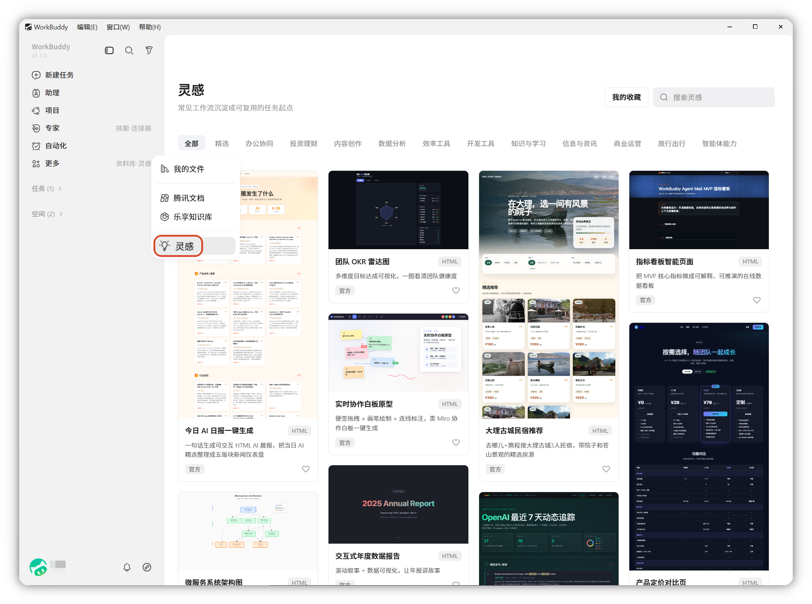
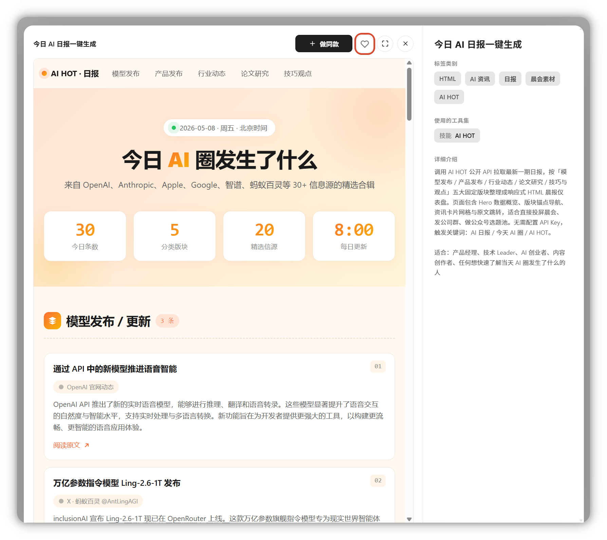
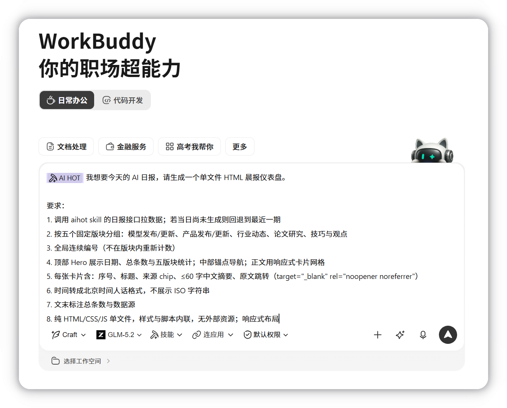
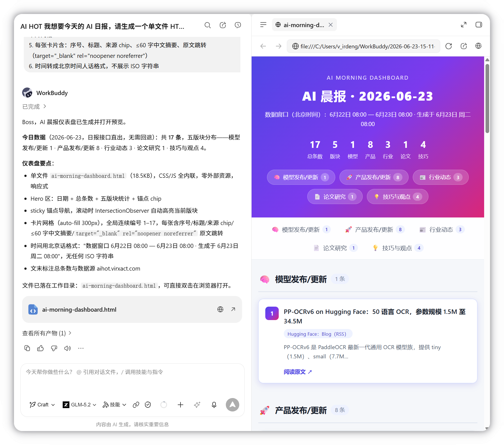

灵感
不知道从哪开始？打开 灵感，浏览大家做出的 WorkBuddy 精选成品。
看中哪个，点击制作我的版本，即可实现Prompt、Skill、专家全部自动就位，零配置直接生成属于你的版本。
概述
灵感集中陈列由 WorkBuddy 生成或社区贡献的优质内容，供您查看、收藏与「做同款」。点击「做同款」会触发对应的 Skill / 专家，由对应模块继续完成任务。
关于灵感
使用场景全覆盖： 精心打磨的七大场景，覆盖日常和工作中的高频需求，按需挑选，无需从零定义。
一键复刻，告别空白页： 选中喜欢的案例，系统自动预填 Prompt、加载关联的 Skill 和专家配置，直接生成你的专属版本。
节省 Token，更高性价比： 精调案例上下文，减少冗余消耗，提升生成质量。让每一个 Credit 都花在刀刃上。
社区智慧沉淀： 复用高手经验，快速掌握场景化最佳实践。
如何使用灵感
1. 进入灵感
在左侧边栏点击更多进入灵感，可在精选板块随机选择热门案例，或按场景分类搜索案例。

2. 选择案例
点击所选案例，查看预览、所使用的工具集和详情介绍；发现宝藏案例还可以红心收藏。

3. 开始制作
点击制作我的版本，WorkBuddy自动预填 Prompt、加载关联的 Skill 和专家配置，可以直接生成，或修改细节生成你的专属版本。

4. 成果查看
在右侧产物页面查看生成结果，生成网页文件时自动打开内置浏览器预览效果:

灵感和 Skill、专家的区别
Skill 和专家是工具箱里的工具，灵感是用工具做出来的真实作品集。
| 模块 | 角色 | 回答的问题 |
|---|---|---|
| Skill | 能力 | WorkBuddy 能做什么 |
| 专家 | 能力 | WorkBuddy 中的谁能帮我做 |
| 灵感 | 成果 | 用这些能力实际做出了什么 |
注意事项与重点提示
信息收集与使用
- 浏览本身： 不收集个人信息、不调用本地权限。
- 「做同款」衍生： 触发 Skill / 专家时，按所触发模块的边界处理。
积分消耗提醒
浏览不涉及积分消耗；「做同款」以实际触发的功能模块为准。
第三方共享
浏览不涉及；灵感衍生行为以实际触发模块为准。
免责声明
灵感展示内容仅作示例参考，请结合实际场景独立判断后再使用。